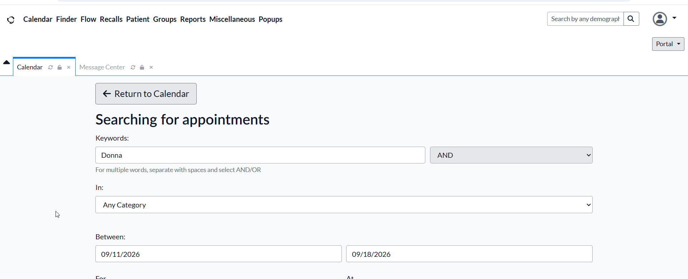
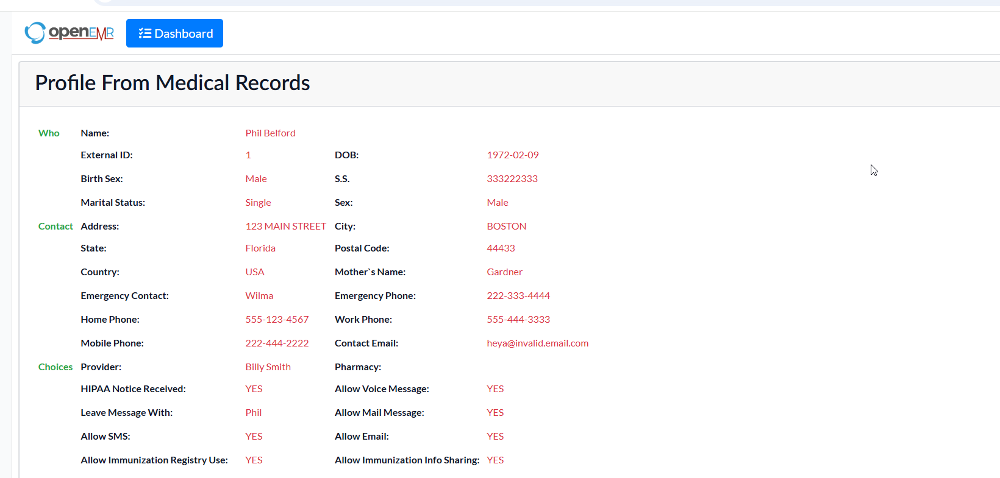

View Patient Information
Open a patient's profile to review the information available to your role.
- Open the patient record from the available patient-management area.
-
Select the patient whose information you need to review.

- Review the information displayed on the patient profile.
